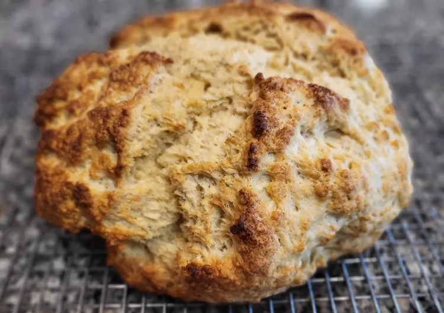

Irish Soda Bread

Description
Irish soda bread is a type of quick bread that relies on baking soda, not yeast, to rise. The bread contains buttermilk, which contains lactic acid. The acid reacts with the baking soda to create air bubbles, resulting in a perfectly risen dough.
Soda bread became incredibly common during the Irish Potato Famine, as you can make it with only four ingredients: flour, salt, an acid, and baking soda.
Ingredients
- Flour
- Margarine
- Sugar
- Leaveners
- Salt
- Buttermilk
- Egg
- Butter
Steps
- Preheat the oven to 375 degrees F (190 degrees C). Lightly grease a large baking sheet.
- Mix flour, softened margarine, sugar, baking soda, baking powder, and salt together in a large bowl. Stir in 1 cup of buttermilk and egg. Turn dough out onto a lightly floured surface and knead slightly. Form dough into a round loaf and place on the prepared baking sheet. Note that the dough will be a little sticky.
- Combine melted butter with 1/4 cup buttermilk in a small bowl; brush loaf with this mixture. Use a sharp knife to cut an 'X' into the top of the loaf.
- Bake in preheated oven until a toothpick inserted into the center of the loaf comes out clean, 45 to 50 minutes. Check for doneness after 30 minutes. You may continue to brush the loaf with the butter mixture while it bakes.